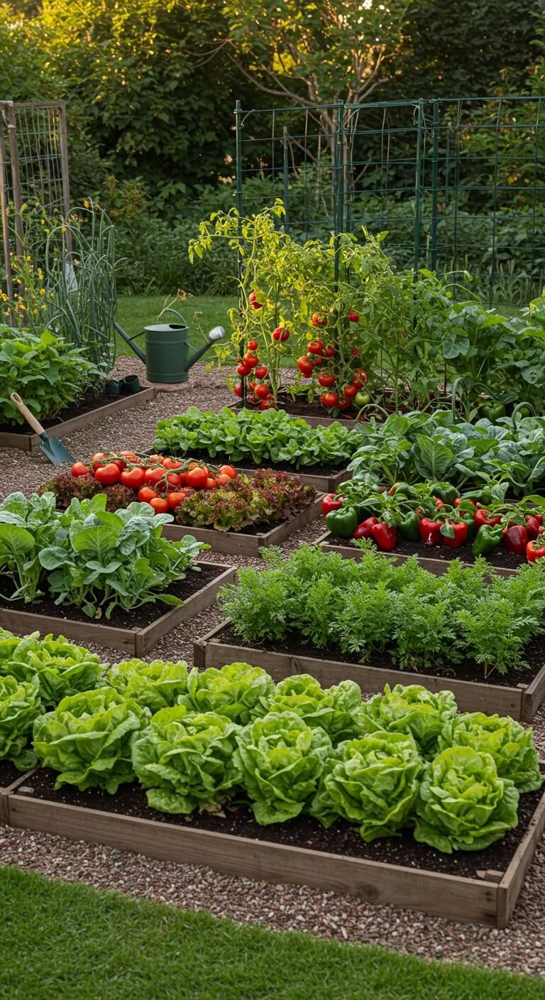

🥗 Alimentos sanos
Sabés exactamente qué usaste para crecer tus plantas, y podés conocer qué prácticas se aplicaron.
Aprendé · Cultivá · Jugá
Una guía interactiva para empezar tu huerta en casa, con ejemplos de Paraguay.
Aprendé a cultivar alimentos en casa y descubrí cómo funcionan las plantas, el suelo, el agua y las estaciones.

Una huerta es cualquier espacio destinado al cultivo de plantas que nos proporcionan alimentos frescos y saludables. No necesitás un campo grande: con macetas, cajas de madera, baldes o un pequeño balcón ya podés empezar.
El tamaño no importa: lo que cuenta es el cuidado y la paciencia. Cada planta que cultivas es un paso hacia una alimentación más sana.
Sabés exactamente qué usaste para crecer tus plantas, y podés conocer qué prácticas se aplicaron.
Con el tiempo, podés reducir algunas compras según lo que produzcas.
podés reutilizar recipientes y reducir algunos envases.
Cuidar plantas puede ayudar a relajarse y conectar con la naturaleza.
Cada planta te enseña sobre paciencia, ciclos de la vida y responsabilidad.
Es un excelente proyecto para compartir con niños y adultos por igual.
Observá cuántas horas de luz recibe y si el agua puede salir del recipiente.
Usá tierra suelta, materia orgánica madura y un recipiente con drenaje.
Controlá la humedad sin encharcar y registrá el crecimiento.
Conocé seis pasos sencillos para sembrar en una maceta: desde elegir el recipiente hasta registrar el crecimiento. Cada semilla tiene sus propias necesidades, así que seguí las indicaciones del envase.
Ver el paso a paso ilustrado
Respondé diez preguntas sobre agricultura o resolvé seis situaciones reales para cuidar tus plantas.
Huerta Digital es un proyecto educativo de 1.º del Bachillerato Técnico en Informática del Colegio Nacional de Villarrica. Combina investigación sobre huertas con desarrollo web para ayudar a aprender de forma visual e interactiva.
Integrante del Grupo 8
Integrante del Grupo 8
Integrante del Grupo 8
La propuesta original pertenece al equipo estudiantil; las mejoras de integración, accesibilidad y pruebas se realizaron con acompañamiento técnico docente.